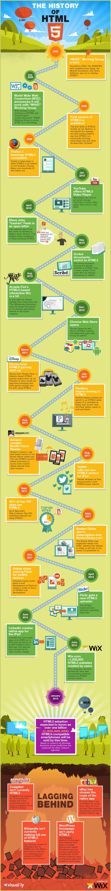

History of Hypertext Markup Language (HTML)
The World Wide Web
The World Wide Web, or WWW, is simply a system of interconnected/linked documents that are accessible through the Internet. Web browsers, such as Google Chrome, Apple's Safari, Opera, Mozilla Firefox, and Microsoft's Internet Explorer, allow people like you and me to request and view documents available on the World Wide Web.
Ok, that sounds great, but how does the WWW do that? How does it know where pages are? How does it link them together? How does it do all the fancy styling so that pages look nice when I see them? This is where HTML comes in. Hypertext Markup Language organizes, defines, and links information and documents together, and is a language that your Web browser can understand and render.
Early Versions of HTML
HTML was specified by Tim Berners-Lee, who, in 1980, proposed a system of interconnected documents built on the Internet. This original specification was proposed and created for researchers in the European Organization for Nuclear Research (CERN). The first document on the Internet about HTML was by Tim Berners-Lee, entitled "HTML Tags," and described eighteen elements that composed HTML. Click on the image below to see a neat infographic of the history of HTML.
Mobile Computing
When HTML was created by Berners-Lee, it was intended for a very specific, limited audience. Now, billions of people all over the world use the Internet. In the early days of HTML, documents were served to and rendered on Web browsers found on desktop and laptop computers. Now, billions of people all over the world access Web pages on thousands of different devices, including mobile phones and tablet computers. For an excellent article on Responsive Web Design, visit Responsive Web Design: What It Is and How To Use It, by Kayla Knight (Smashing Magazine, 2011).
HTML5
The World Wide Web Consortium (W3) and the Web Hypertext Application Technology Working Group (WHATWG) developed HTML5 beginning in 2006. According to the W3's site w3schools.com, some basic rules for HTML5 included:
- New features should be based on HTML, CSS, DOM, and JavaScript
- The need for external plugins (like Flash) needs to be reduced
- Error handling should be easier than in previous versions
- Scripting has to be replaced by more markup
- HTML5 should be device-independent
- The development process should be visible to the public
HTML5 addresses many issues with previous versions of HTML, and the changing needs of Web browsing due to advancements in computing technology and form factor. HTML5 provides a standardized recommendation for organizing/structuring Web pages, and includes various libraries which make RWD simpler, and which fully integrates CSS3 in order to create beautifully styled Web pages.
Advantages over native appications
Although native applications have several advantages over mobile sites, there are some key advantages to mobile websites created with HTML5 and CSS3:
- HTML5 mobile applications are less expensive to develop and deploy, since they are cross-platform.
- HTML5, CSS3, and JavaScript are open source technologies
- Mobile websites can reach a larger audience
...to learn more about these new features, continue reading in the next section, HTML5 Syntax.